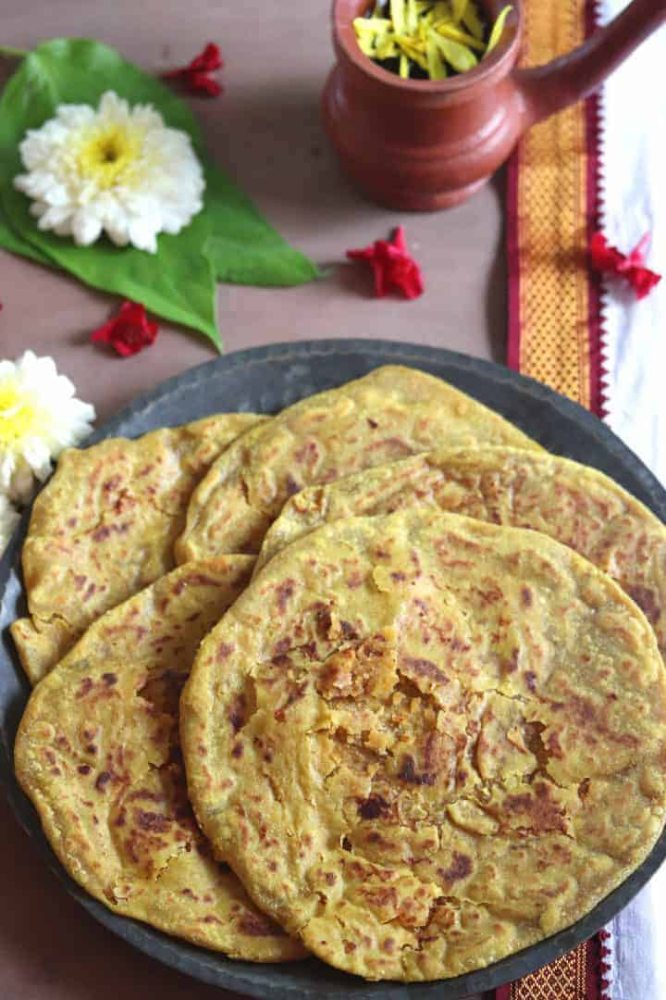
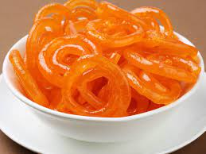

1.Holige / Bele Obbattu:

Holige or Bele Obbatu is a sweet boli (poli) which means sweet stuffed flatbreads
that are traditionally made on Karnataka New Year i.e. Ugadi Festival.
Holige is made using Whole Wheat Flour and has a stuffing made with Chana Dal
or split chickpeas and Jaggery. The stuffing also contains few aromatics or spices
like Cardamom, dry ginger powder or Saunth and Nutmeg.
Holige is very similar to Puran Poli of Maharashtra and Gujarat.
It is made during major festivals, weddings or family functions.
Be it Holi, Gudi Padwa or Sankranti, making of Puran Poli and serving
it with toop or ghee and some Warm Milk is customary.
Holige is quite similar to Tamil Nadu style Boli. Usually its made with Maida
or All Purpose Flour but I have made using Whole Wheat Flour. The stuffing can be
either with lentils or a mix of jaggery and coconut as well. It is cooked in ghee
2.Jalebi :

Crisp, orange and coiled, jalebiand its unique shape has mesmerised us all at some
point in life. Several poets and writers have used jalebi for a variety of their
poetic references and metaphors. Not many sweetmeats around the world have had a
fortune of being such a phenomenon. The way it is doled out in the hot oil, using
a muslin cloth, fried and carefully transferred in the sugar syrup - it wouldn't
be wrong to say that the process of making jalebis is no less drool-worthy than the
final product on your plate. You can have jalebis alone, or with a samosa, but best
paired with a generous dollop of creamy rabdi. A glass of milk with crunchy hot jalebis
is favourite breakfast meal in several Indian towns like Haridwar and Indore. But,
did you know your favourite sugary sweetmeat that you see across all halwai ki
dukan in your neighbourhood is not Indian but a West Asian or a Persian import?!
Yes, you heard us! Jalebi did not originate in India, but is a version of west Asian
"Zolabiya" or "Zalabiya." In Iran, Zalabiya was a festive treat, which was enjoyed
by everybody, especially during the iftaar gatherings of Ramzaan. In 13th century,
noted writer Muhammad bin Hasan al-Baghdadi, collected all the dishes of the time
and featured them in his cookbook, 'Kitab al-Tabeekh',
where Zalabiya was mentioned for the very first time.